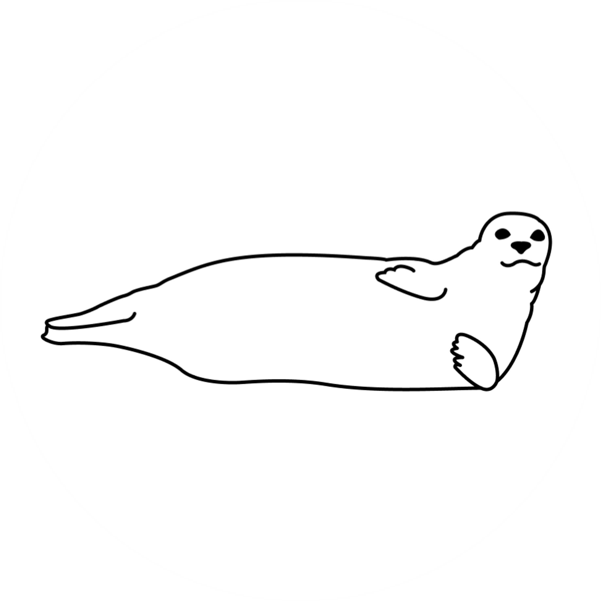

This model includes the dynamics between pinnipeds (Harbor seals, California sea lions, Steller sea lions), salmon who have reached the gauntlet area, and human harvesters of both salmon and pinnipeds.
This model represents the dynamics occurring between the relevant actors only within gauntlet systems. Gauntlets are areas where returning salmon are migrating from salt to fresh water and are forced to slow down, making them vulnerable to predation and harvest. There is no explicit spatial component, i.e. all dynamics either occur in an unnamed staging area outside the gauntlet (pinniped decision making and social copying), in an undescribed alternative foraging area called “open water” (pinniped baseline consumption, “forgetting” about hunt exposure or foraging opportunities at the gauntlet), or occur within a single spatial unit that is the gauntlet (predation on salmon, harvest of salmon and pinnipeds, pinniped exposure to hunt activity, salmon migration beyond gauntlet).
This model explores dynamics between the relevant actors on a daily time step and explores how those dynamics change over the course of a year.
Dynamics explored in this model include salmon migration through the gauntlet zone, pinniped predation on salmon, human harvest of salmon and pinnipeds, pinniped individual learning about foraging opportunities, pinniped individual learning about hunt risk, and pinniped social copying of foraging decisions. Inter-annual pinniped population dynamics are not represented. All individuals are assumed to have identical bioenergetic demands within each pinniped species group, though each individual accumulates their own learning and decision-making characteristics as described below. Salmon survival and movement outside of the gauntlet is not addressed. The response of interest is the number of salmon that escape beyond the gauntlet under different pinniped harvest conditions. Salmon species are tabulated separately, but age structure within species is not acknowledged.
See in depth table here
where I put updates or questions or problems
details the base run of the model
was a test run with 150 seals
was a test run with exclusion zone management
was a test run with more boat harvest effort